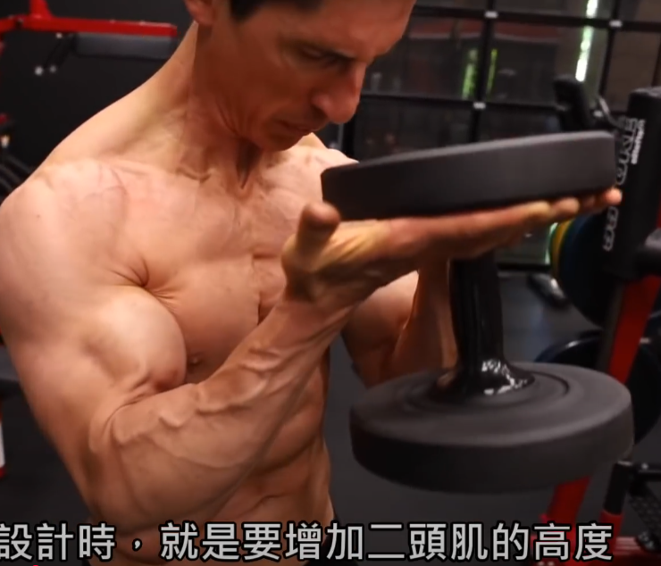
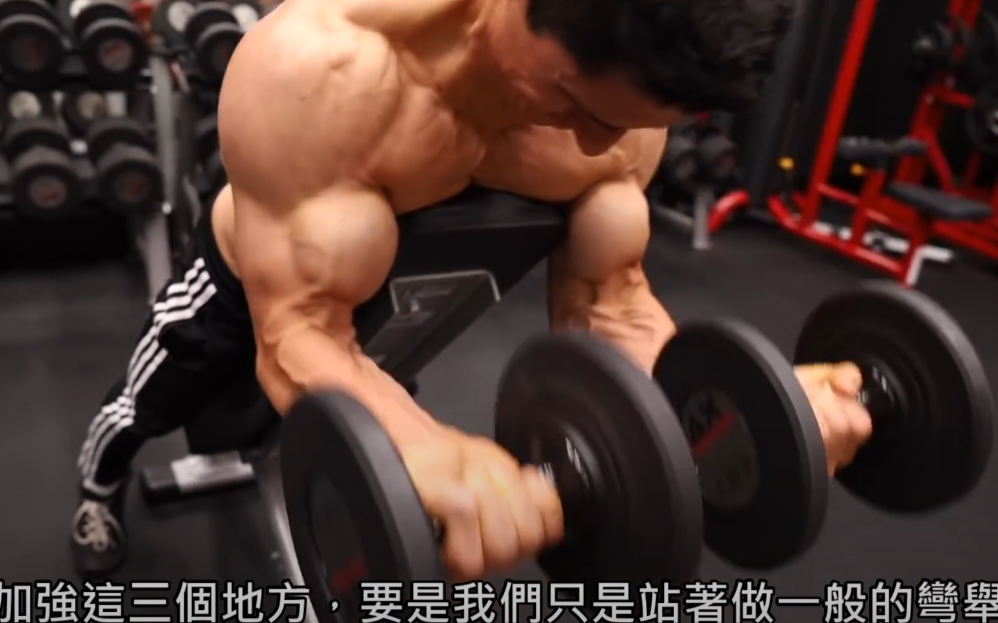
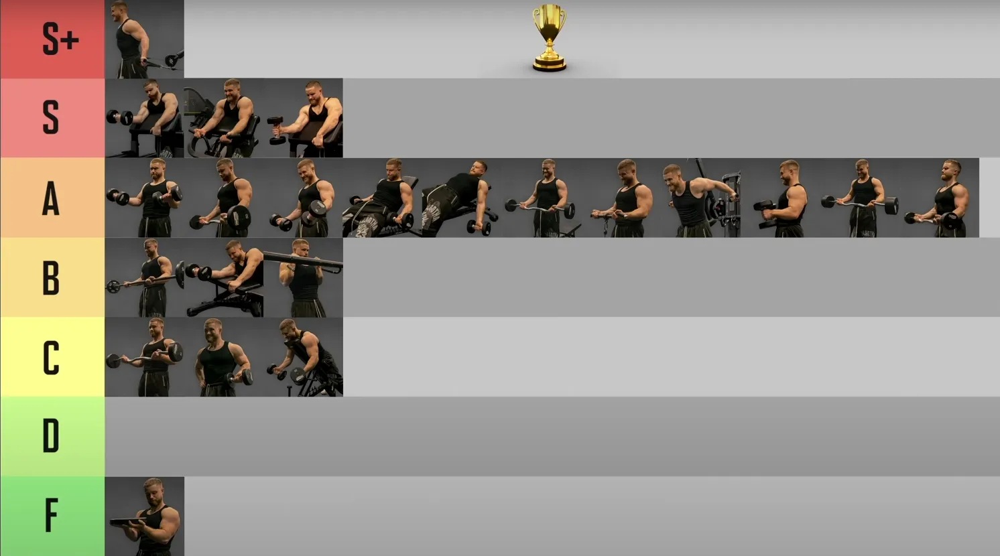

Biceps
1 肱二头肌9 行
第一个动作很容易确定，斜板弯举
教练让我用直角，但是其实用途不同，还是斜板更好
- 斜板通过肩部后倾增加肱二头肌长头的拉伸范围，强调峰值塑造。
- 峰值收缩不强但拉伸刺激更大。斜板更适合细节发展，直角凳适合做大重量阶段。
- 三剑客推荐
ez bar vs 杠铃 弯举，对肱二头肌刺激程度和保护手腕 这两个角度 ez bar 都是完胜
牧师凳拉伤风险非常非常高
主要类型是快肌纤维
二头肌与三头肌锻炼的不同：三头肌在推类无论如何都会发力，而二头肌我们在背部训练中常说注意不要让手臂发力，所以复合动作中二头肌受到的锻炼时比较少的，所以最好两个动作
2 长头与短头综述68 行
这里时翻译的reddit，是热心人提供的所以可能是错的，因为显然即使一个人的意见在这里面也反复修改过，但是参考
是的，因此，为了锻炼肱二头肌的长头，你可以选择将手臂放在身体后方进行弯举练习，例如上斜哑铃弯举（我个人最喜欢的）或背对绳索弯举。为了锻炼肱二头肌的短头，你可以在身体前方进行弯举，即牧师凳弯举（器械、绳索、哑铃或杠铃）或蜘蛛弯举。此外，站姿交替哑铃弯举和杠铃弯举通常会使短头比长头更加偏向。需要说明的是，任何类型的弯举都会针对两个头，此信息只是为了让你知道如何使每个头都偏向另一个头。值得一提的是，通过在旋前或中立腕位进行弯举来训练肱肌（不确定拼写是否正确）。例如，哑铃锤式弯举或杠铃/ez 杆反向弯举就是其中几种。
编辑：这是错误的。进一步研究发现，肩部在伸展和屈曲方面的定位会影响肌肉位置的延长/缩短。为了调整肱二头肌的不同头的位置，你应该在练习中更多地进行内旋（短头偏向）或外旋（长头偏向）。需要注意的是，如果你不是高级举重运动员，并且两个头之间没有明显的不平衡，那么你实际上不需要调整任何一个头的位置。只需在练习中保持变化，并保持内旋/外旋相对一致即可。
所以，事实证明我错了，很抱歉。我误解了我的信息来源，肩部伸展和屈曲会影响肌肉的缩短和延长部分。同样的道理，大多数推举动作会训练胸肌/三角肌前束的延长部分，而推举和前平举则会偏向缩短部分。要偏向二头肌的短头，你需要进行更多的肩部内旋。长头则需要进行外旋。再次为我的错误信息深感抱歉。
你懂的！我顿悟了！！！我早该知道的……几年前我第一次做上斜哑铃弯举的时候就看出来了……是啊，关键在于姿势，如果在身体外侧，就多用长肌，如果在身体内侧，就多用短肌！就像牧师椅或者腿内侧一样……妈的，我刚试了一下，很容易就能看出……目标是在内侧或外侧的位置放松你的手臂……也许你的手臂会稍微弯曲……但只要轻轻地做个小动作，你就会看到区别了……当它在腿内侧时，弯曲的方向更多是向二头肌内侧，而当它在外侧时，就像上斜卧推一样……弯曲，哇，整个二头肌就会从右边弹起来。从来不知道这个
2.1 长头10 行
2.1.1 DB Incline Curl6 行
单臂哑铃斜板弯举（Single-Arm Dumbbell Incline Curl）--30-45度斜角
-
盖伊三人组- 两个人推荐
-
每侧10-12次，3组
-
主要激活肱二头肌长头，因为斜板让肩部处于伸展位置（手臂后倾），长头被充分拉伸。
-
控制下降，保持肘部位置固定，避免肩膀代偿。
-
斜板增加拉伸范围，强化长头的激活，适合塑造肱二头肌的“峰值”。
孤立性强，减少代偿，适合专注肌肉收缩感。
2.1.2 DB Waiter' s Curl2 行
注意不要让前臂参与

2.2 短头6 行
2.2.1 DB Preacher Curl空
2.2.2 DB Seated Curl Plus空
2.2.3 DB “no money” Curl空
2.2.4 DB Spider Curl2 行
杠铃蜘蛛弯举是最好的短头二头肌锻炼方法之一，因为它可以限制动量，提供极佳的运动范围，并提供生长所需的必要负荷。

2.3 Miscellaneous空
2.4 Brachialis5 行
DB Robot Curl——funny
-
单臂绳索锤式弯举（Single-Arm Cable Hammer Curl）
- 每侧10-15次，3组。
- Cable 设备，提供恒定张力，动作路径与斜板弯举不同，强调肱肌和前臂屈肌，同时保持单侧训练风格。
- 主要激活肱肌（brachialis），其次是肱二头肌（长头和短头均衡）和前臂屈肌。
- 轻重量高重复更适合绳索动作，强调控制而非冲量。
-
~~ez bar 弯举~~
- 双侧运动，暂时不做
-
~~Preacher~~
- 短头
- 我推荐斜板弯举是因为它能更好地拉伸长头，塑造肱二头肌的整体线条，而Preacher弯举更偏向短头，动作范围较小，可能与你的目标（全面发展和单侧训练）稍有偏差
- 单臂Preacher弯举虽然可行，但动作稳定性要求较高，初学者可能需要适应，且相比斜板弯举，单侧感不如站姿或仰卧动作明显。
- 动作路径固定，缺乏肩部角度变化，可能与你喜欢的左右屈伸的“新奇感”相比刺激稍显单一。
3 ———名人建议———空
4 Athlean-X3 行
4.1 Biceps2 行
best： Alt. Standing DB Curls
almost best： Incline DB Curls , Chinups, ez Barbell Curls
5 盖伊三人组：一个动作1 行
二头肌：ez 弯举，db坐姿上斜curl，db坐姿上斜curl —— 两个人都是完全下垂哑铃
6 Thib10 行
| 类别 | Primary | Secondary | Auxiliary | Remedial |
|---|---|---|---|---|
| 手臂屈肌（肱二头肌、肱肌） | 站姿杠铃弯举，牧师凳杠铃弯举 | 锤式弯举，坐姿哑铃弯举及其变化动作，牧师凳哑铃弯举，正握杠铃弯举（站姿或使用牧师凳），Zottman弯举 | 机器弯举，钢索弯举及其变化动作，集中弯举 | 长柄锤或托尔之锤前臂转动（肘部紧贴体侧，弯曲90度，手握锤柄下半段。在起始动作中，采用正握，即掌心向下，拇指向内。接下来，肘部不动，转动前臂。一直转到掌心向上，拇指向内。） |
7 The Best Damn Back and Biceps Workout 最佳背部和二头肌锻炼1 行
- Barbell Curl or EZ-Bar Curl 杠铃弯举或 EZ-Bar 弯举
8 The Best And Worst Biceps Exercises3 行

S：db preacher curl, db preacher hammer curl
A : DZ bar curl, DB curl， lying DB curl, stand cable curl